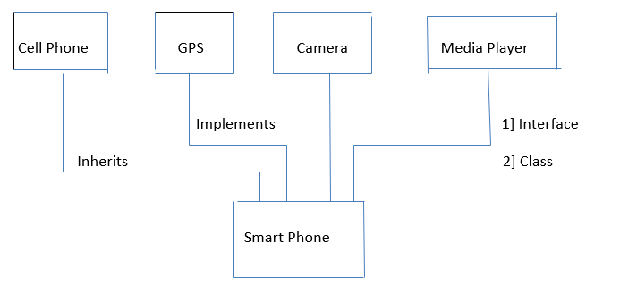

Chapter 11- Abstract Classes & Interfaces
What does Abstract (class) mean?
Abstract in english means existing in thought or as An idea without concrete existence.
Abstract method
A method that is declared without an implementation
abstract void moveTo (double X, double Y)
Abstract Class
If a class includes abstract methods, then the class itself must be declared abstract, as in:
public abstract class Phone Model {
abstract void switchoff();
//more Code
}
When an abstract class is subclassed, the subclass usually provides implementations for all of the methods in parent class. If it doesnt, it must be declared abstract.
An Example
Shape
Circle Rectangle Rhombus
(Note - It is possible to create reference of an abstract class. It is not possible to create an object of an abstract class.)
Interfaces in Java
Interface in english is a point where two systems meet and interact.
Buttons HUMAN
T.V
In Java interface is a group of related methods with empty bodies.
An Example;
interface Bicycle {
Void applyBrake (int decrement);
Void speedup (int increment);
}
class Avoncycle implements Bicycle {
int speed st = 7;
void apply Brake (int decrement){
Speed = Speed - decrement;
}
Void speed up (int increment) &
speed = speed + increment;
}
Abstract class vs Interfaces
We can’t extend multiple abstract classes but we implement multiple interfaces at a time. Interfaces are meant for dynamic method dispatch and run time polymorphism
Is multiple inheritance allowed in Java?
Multiple inheritance face problems when there exist methods with same signature in both the super Classes.
Due to such problems, Java does not support multiple inheritance directly but the similar Concept can be achieved using Interfaces.
A class can implement multiple Interfaces and extend a class at the same time.
Note: 1] Interfaces in Java is a bit like the Class but with a significant difference.
2] An Interface can only have method signatures, Constant fields and default methods.
3] The class implementing an Interface needs to declare the methods (not fields).
4] You can create a reference of Interfaces but not the Object.
5] Interface methods are public by default.
Default methods
An interface can have static and default methods.
Default methods enable us to add new functionality to existing Interfaces.
This feature was introduced in Java 8 to ensure backward Compatibility while updating an Interface.
Classes implementing the interface need not to implement the default methods.
Interfaces can also include private methods for default methods to use.
Inheritance in Interfaces
Interfaces can extend another interfaces :
public interface Interface1 {
Void meth 1();
}
public interface2 extends interface1
Void meth 2();
}
Remember that interface cannot implement another interface, only classes can do that!

Similar to Dynamic method dispatch in Inheritance
GPS g = new Smart Phone(); Can only use GPS methods
SmartPhones = new SmartPhone(); Can only use SmartPhone methods
Implementing an Interface forces method implementation .